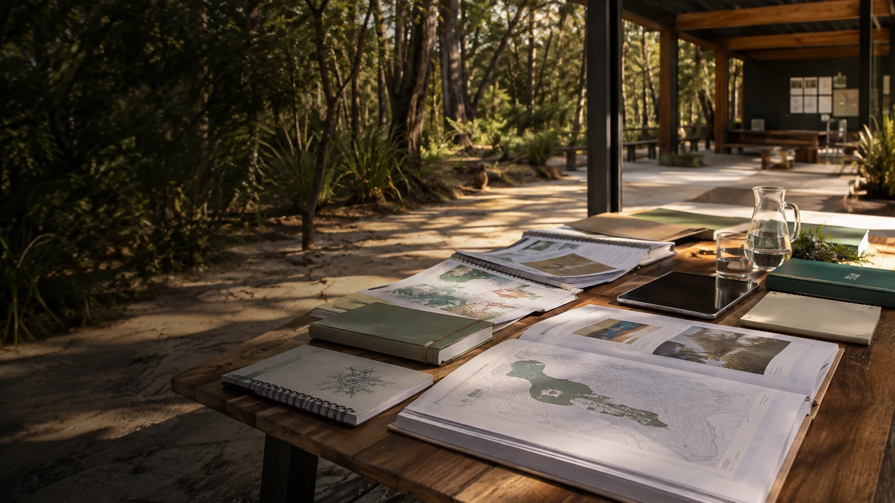

Submissions
Documents prepared for public inquiries and broader government conversations. They provide current themes and public reasoning.

These submissions, proposals, planning drafts and research conversations show where ideas came from. They do not turn a proposal into an agreement or a claim into a fact.
The library includes recent submissions alongside older and more speculative planning. File labels describe their role in this website, not their accuracy or acceptance by another person or organisation.
Documents prepared for public inquiries and broader government conversations. They provide current themes and public reasoning.
Working ideas, early proposals and AI-assisted research. They are useful for tracing possibilities and questions.
A neutral summary connecting sites, health, ageing, community wealth and related organisations without assigning roles or consent.
PDF is easiest to read. DOCX is editable. Markdown and text files expose the underlying working material directly.
Recent submission on cooperation, sovereignty, shared capability and the wider Oceania setting. DOCX download
Recent submission on locally governed relationships across distinct communities and systems. DOCX download
National infrastructure, distributed capability, AI and community context. PDF DOCX Markdown
Public inquiry material on resilience, sovereignty and distributed systems. PDF DOCX Markdown
Funding, public value, local capability and community wealth. PDF Markdown
Distributed compute, resilience and avoiding excessive concentration. DOCX Markdown
Earlier national AI, infrastructure and Minjerribah testbed material. DOCX download
Historical site, title, planning, Anglican, health, learning and community wealth leads. Several claims require current checking. Read the Markdown file
An earlier partnership and property-transfer strategy. It contains strong old conclusions that are not adopted as current facts. Read the Markdown file
Earlier cooperative, C-Hour, workforce, health, compute and community wealth thinking. Ready S.E.T. Co-op remains hypothetical. Read the Markdown file
Early research for portable sand sport, outdoor cinema, all-ages activity and practical roles. No location is selected by this file. Read the Markdown file
The neutral working summary that connected the concurrent sites, services, organisations and research fields used in this website. Read the text file
These are planning documents. They do not present Aura Health Twin as clinical software, the Aura Geode as an approved medical device or the proposed 60-session hyperbaric journey as an established clinical protocol.
A 45-page PDF carrying the wider capsule, hyperbaric, sensing, digital twin and 60-session longevity vision. It includes speculative and AI-generated material. Open the PDF
The larger raw planning conversation behind the Geode, AuraOS, digital twin and 60-session architecture. Read the Markdown file
A first-draft clinical research and implementation plan. The proposed SaMD work remains undeveloped and no clinical status is claimed. Read the Markdown file
Cooperative finance, shared specialist equipment, digital twins and research planning. Read the Markdown file
Earlier aged-care translation of Aura Clinical, Aura Place and Aura Access ideas. Read the Markdown file
Macro health, dementia, longevity, C-Hour and cooperative infrastructure planning with highly speculative sections. Read the Markdown file
An experimental planning document linking health infrastructure, cooperative access and C-Hour. Open the PDF
Long-horizon research into local assets, energy, materials, ecology and intergenerational wealth. Read the Markdown file
Comparative research into Indigenous equity, trusts and sovereign wealth structures. It is precedent material, not a prescription for Minjerribah. Read the Markdown file
Experimental legislative and economic planning for recognising voluntary contribution alongside ordinary money. Open the PDF
Postcode-level sovereign compute as shared national infrastructure. DOCX download
Large-scale blended finance, sovereign compute and infrastructure planning. DOCX download